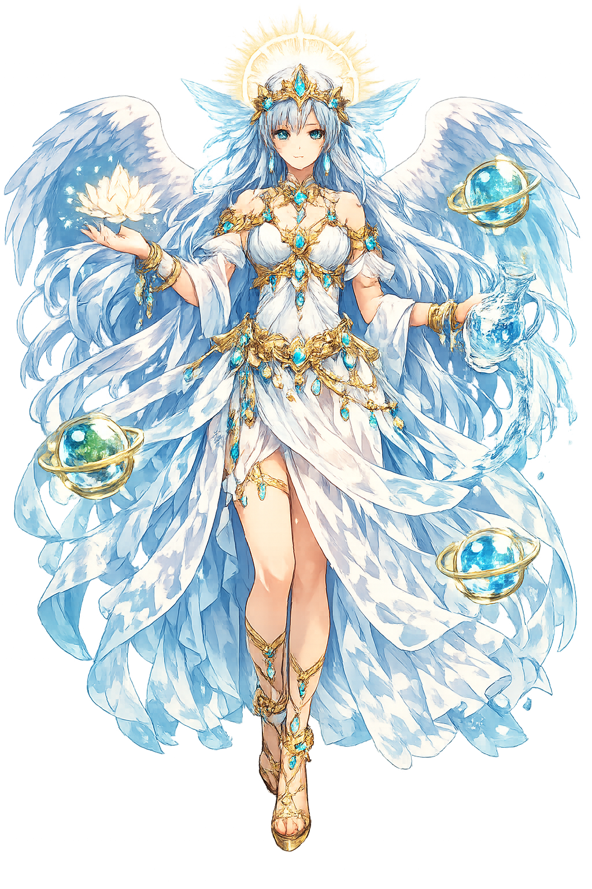

Unicode restoration and ASCII comparison
𐬵𐬀𐬎𐬭𐬬𐬀𐬙𐬁𐬙
The name in its original Zoroastrian form. Haurvatāt (𐬵𐬀𐬎𐬭𐬬𐬀𐬙𐬁𐬙) is attested in the source tradition — “Wholeness”. Its macron-length vowels carry the full phonetic and orthographic weight of the source tradition.
haurvatat
Reduced to plain haurvatat, the name loses everything that made it specific: macron-length vowels. What remains is an ASCII string that machines can parse but that no longer speaks with its original voice.
Haurvatāt
The Unicode restoration recovers what ASCII flattened. Haurvatāt restores macron-length vowels, returning the name to its original written dignity. The domain encodes to Punycode, but the browser displays the truth.
Haurvatāt.com → xn--haurvatt-n7a.com
The non-ASCII characters in Haurvatāt are encoded while the ASCII remains visible. To the DNS, it is Punycode. To humanity, it is Haurvatāt.
How Haurvatāt travels from ancient script to the modern URL
How Haurvatāt was spoken
Water, Integrity, and the Amesha Spenta
Haurvatāt is the Amesha Spenta of wholeness, health, and water in Zoroastrianism. Her name means 'every-ness' or 'completeness': she guards what is unbroken, undiminished, and life-giving. Waters — rivers, springs, rain, and the sea — are her domain, and health is her gift to those who live in harmony with Aša. With Amərətāt she forms a pair that promises the body and the earth restored.
Rivers, springs, rain, and the sea are sacred because they manifest Haurvatāt's wholeness.
Her name names the state of being complete, sound, and free from the wounds of the lie.
Wholeness and immortality are worshipped together as the gifts that sustain body and soul.
Polluting water is a serious sin because it violates her domain and the cosmic order.
Stories of Haurvatāt
Haurvatāt, like the other Amesha Spentas, does not have a long heroic mythology. Her importance lies in cosmology and ritual: she is the divine principle that makes water pure, bodies whole, and the cosmos complete. Her myths are the myths of creation, purity, and final restoration.
In Zoroastrian cosmogony, AhuraMazdā creates water as one of the seven good creations and appoints Haurvatāt as its guardian. Angra Mainyu attacks water by bringing drought, pollution, and salt. The sacred duty of Zoroastrians to keep water pure — to avoid contaminating rivers and wells — flows directly from this mythic assignment.
In the Yasna ritual, water is offered together with the Haoma plant. The rite unites Haurvatāt's domain (water) with Amərətāt's domain (plants) and the prayer of the priest. This triad — water, plant, and word — reconstitutes the original goodness of creation and asks the divine to restore wholeness to the worshipper.
At Frashokereti, the final renovation, the world will be purified of every wound inflicted by the lie. Bodies will be whole, waters will be clean, and the created order will flourish without decay. Haurvatāt's gift will be fully realized: not merely individual health but the wholeness of a healed cosmos.
Haurvatāt is the god of unbroken things: a clean spring, a healthy body, a community kept whole. She asks us to notice that pollution is not just an environmental problem but a spiritual wound — an attack on the completeness of the world. To honor Haurvatāt is to refuse the lie that our actions do not flow downstream. Every river protected, every well kept pure, is an act of devotion to the wholeness she guards.
Enter Extended Lore